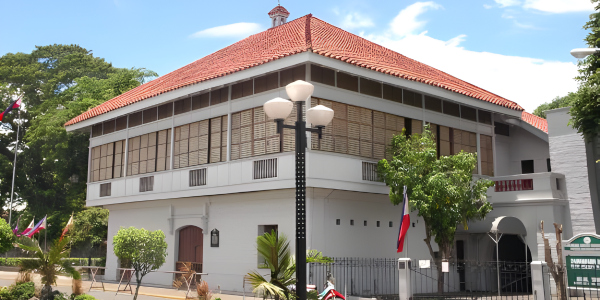
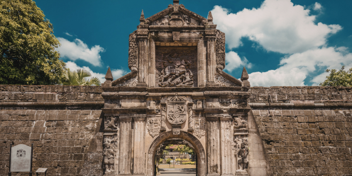
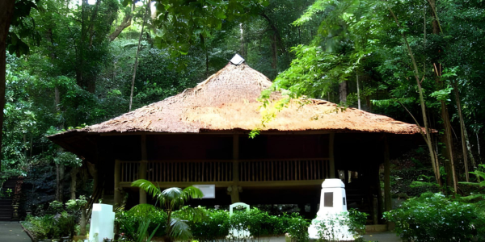
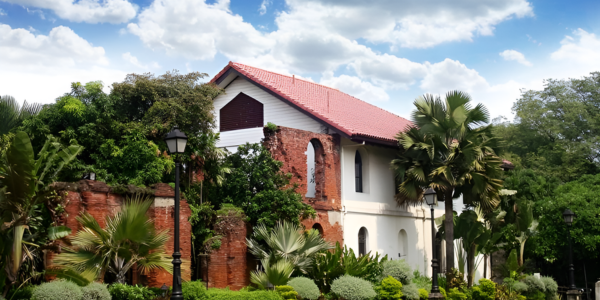
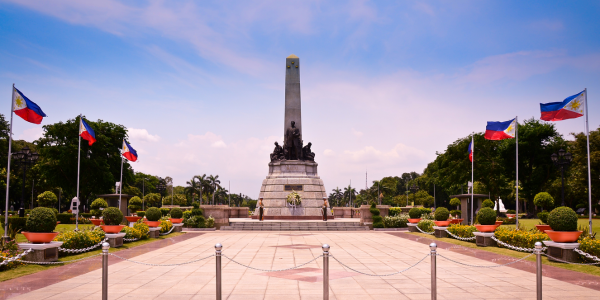

Republic of the Philippines
Discover the heritage sites that shaped the life, exile, and sacrifice of José Protacio Rizal — national hero of the Philippines.
His Story
From the shores of Calamba to the fields of Bagumbayan — trace Rizal's path across the Philippines.

Birth of a Hero
José Rizal is born on June 19, 1861 — the seventh of eleven children. The family home, now a national shrine, stands as testament to his humble beginnings.
View Heritage Site →
Student & Scholar
Rizal studies at Ateneo Municipal de Manila and Universidad de Santo Tomás. The walled city forged his intellect and nationalist spirit.
View Heritage Site →
Years of Exile
Exiled for four years, Rizal builds a school, a hospital, and a water system — transforming exile into a mission of service.
View Heritage Site →
Imprisonment & Final Days
Falsely accused of sedition, Rizal writes his final poem — Mi Último Adiós — hidden inside an alcohol stove in his cell.
View Heritage Site →
The Ultimate Sacrifice
At 7:03 AM, José Rizal is executed by firing squad at Bagumbayan. He was 35. His death ignited the Philippine Revolution. The Rizal Monument marks the very spot.
View Heritage Site →Explore each heritage site in detail — photos, trivia, and virtual tours.
View All Heritage Sites